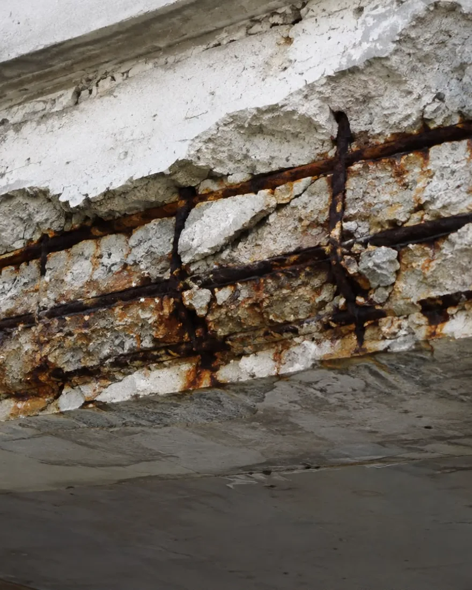
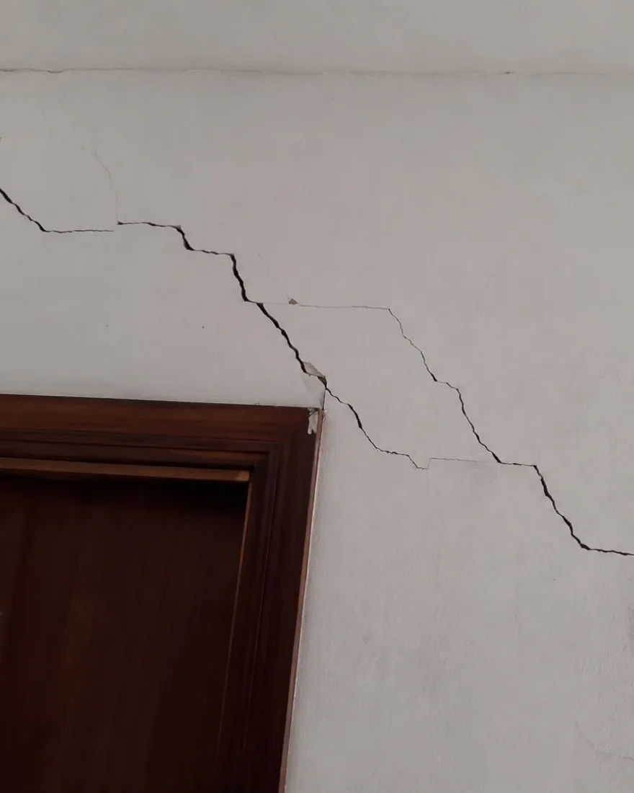
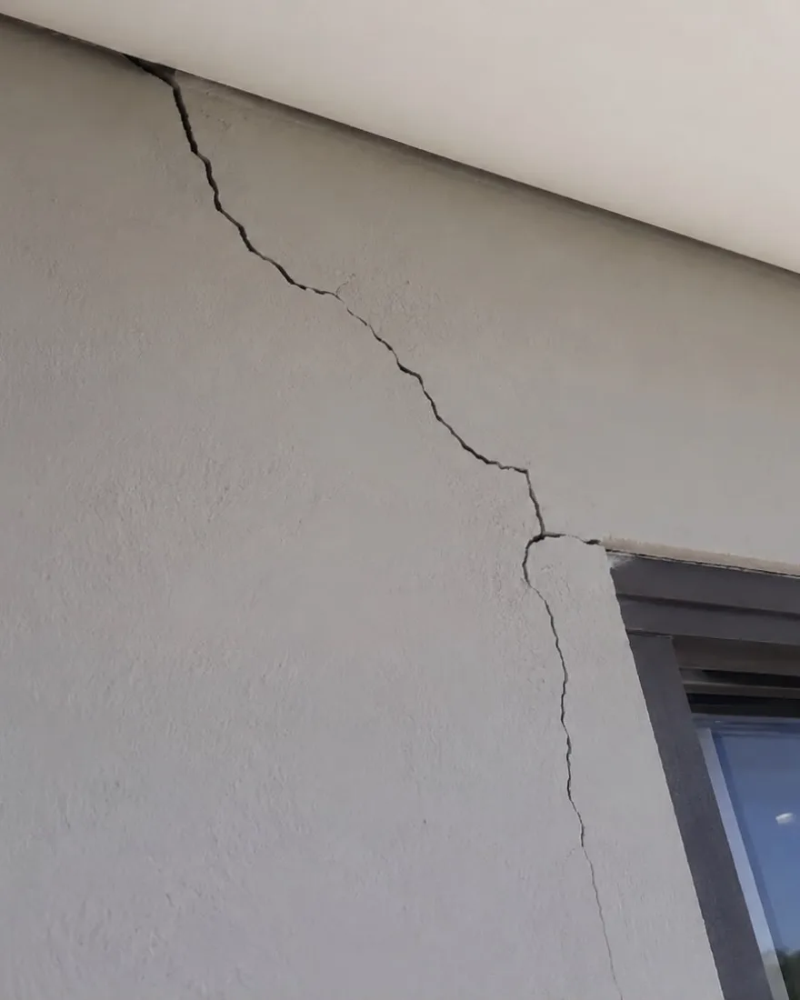
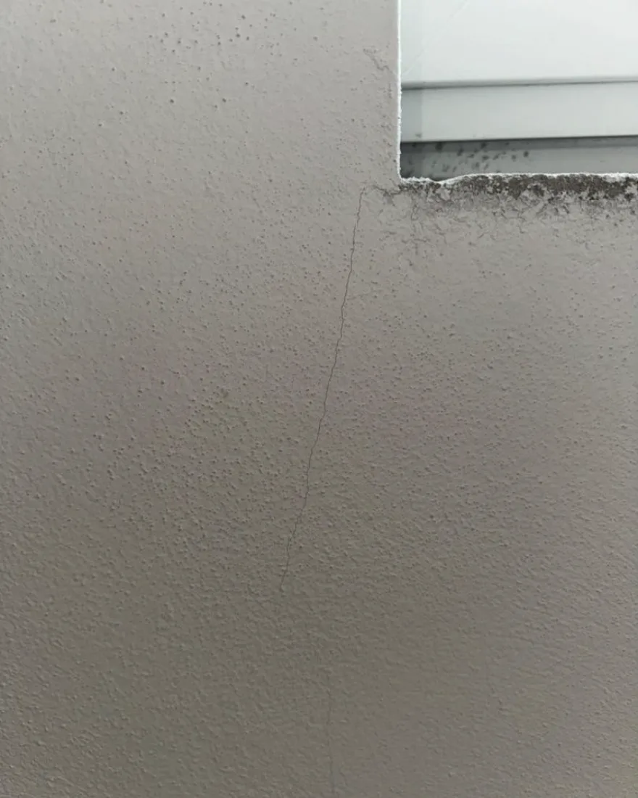
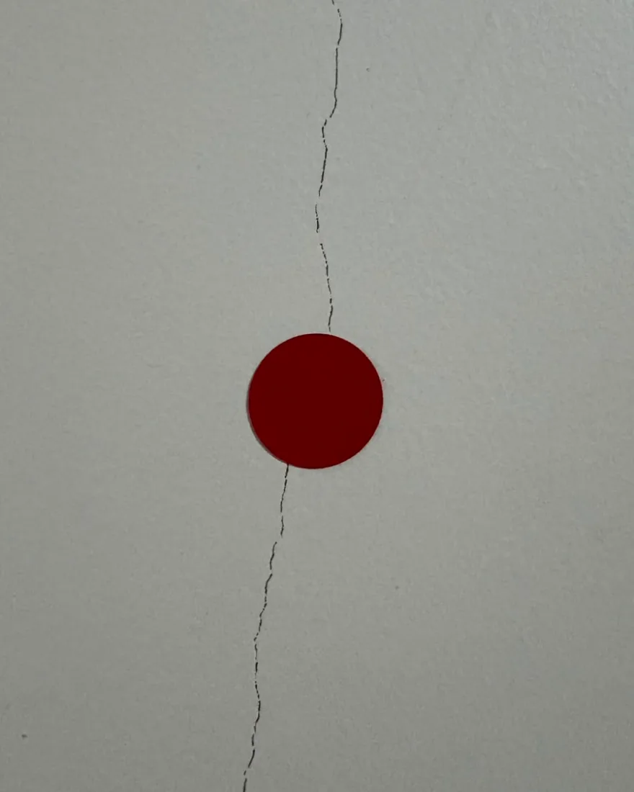
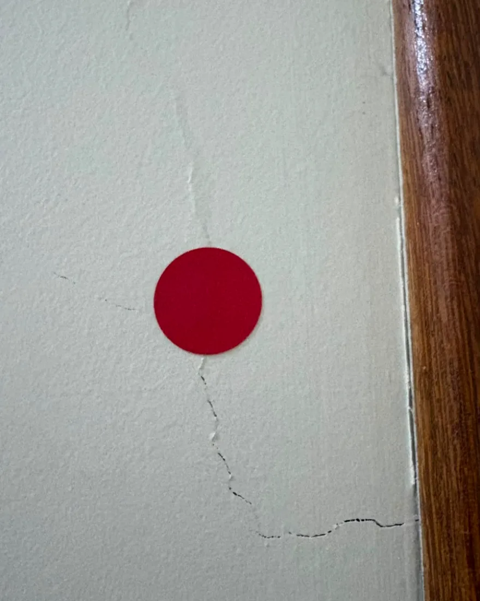
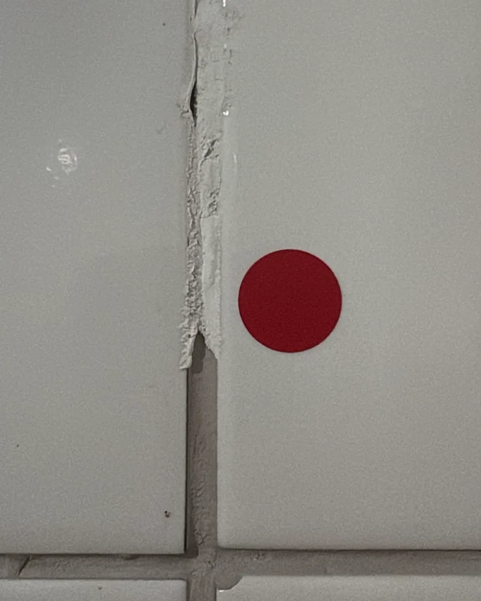
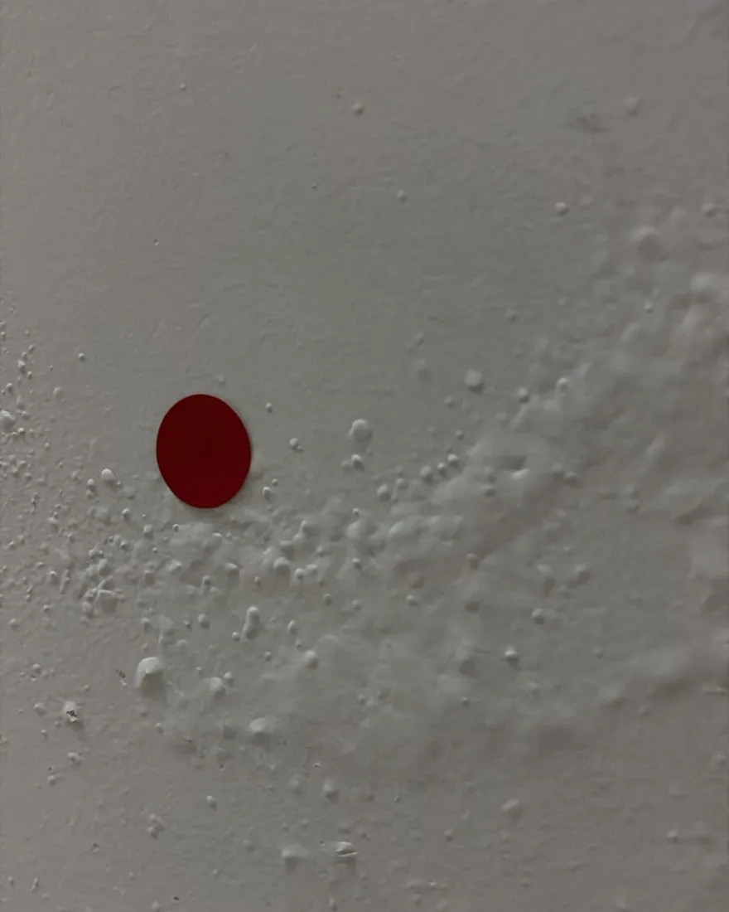

O cobrimento se desprendeu e o aço ficou exposto ao ar. A ferrugem expande, empurra o concreto e acelera o próprio processo. Aqui não é estética: é perda de seção resistente.
EV-01 · Estrutura
Vistoria de imóvel, inspeção predial e avaliação com laudo técnico assinado por engenheira civil. O olhar de engenharia que revela o que passa despercebido, antes que vire prejuízo.
Do recebimento das chaves à disputa com o vizinho, cada serviço entrega o mesmo: clareza técnica para você agir com segurança.
Recebeu as chaves? Antes de assinar, verificamos acabamento, instalações e estrutura. Você recebe um checklist técnico que evita pagar por defeitos que não são seus.
Obra ao lado da sua? Registramos o estado do seu imóvel antes dela começar. Se surgirem trincas, a prova técnica é sua, e não uma discussão de palavra contra palavra.
Diagnóstico completo das condições do edifício (estrutura, instalações e conservação) com laudo que orienta manutenção, valoriza o imóvel e atende exigências legais.
Valor de mercado com fundamentação técnica para compra, venda, inventário, financiamento ou processo. Um número que se sustenta, porque vem de metodologia e não de achismo.
Imóvel ou loteamento fora da conformidade? Conduzimos a documentação e o registro técnico para deixar tudo legalizado, seguro e pronto para transação.
Trincas, infiltrações, umidade e desempenho: investigamos a causa real do problema, não só o sintoma, e indicamos a solução técnica correta.
Elaboração do projeto de incêndio para indústria, comércio, obra e instituição, do levantamento em campo à entrega com responsabilidade técnica. Já executado em obra de frigorífico e em escola, com visita ao local antes de qualquer prancha.
Um imóvel pode parecer perfeito. Mas são os detalhes que revelam a verdade, e descobri-los depois da assinatura custa muito mais caro.
Uma vistoria bem feita transforma dúvida em documento, e documento em segurança jurídica.
Agendar vistoriaProblemas identificados cedo, quando ainda são baratos de resolver.
Você decide com base em fatos técnicos, sem apostar no escuro.
Um laudo formal, com evidências, que serve de prova documental.
Respaldo para negociar, cobrar ou se defender com segurança.
Todo ponto vermelho é um achado real, marcado na parede antes da foto e descrito no laudo. Estas são vistorias de verdade, não imagem de banco.

O cobrimento se desprendeu e o aço ficou exposto ao ar. A ferrugem expande, empurra o concreto e acelera o próprio processo. Aqui não é estética: é perda de seção resistente.

Desce em degraus acompanhando as fiadas de bloco e abre justamente nos cantos de porta e janela. Esse desenho é assinatura de recalque de fundação, não de acabamento mal feito.

O canto da janela concentra tensão e é onde a alvenaria cede primeiro. Do lado de fora, a abertura deixa de ser só trinca e vira caminho de água para dentro da parede.

Fina o suficiente para sumir na pintura e ninguém notar na visita. Junto do acúmulo escuro no peitoril, aponta infiltração já ativa naquele encontro de parede e janela.

Localizada, marcada e fotografada com referência no próprio local. Marcar é o que permite voltar daqui a seis meses e responder a pergunta que importa: ela está parada ou está crescendo?

Percorre a parede e morre no encontro com a porta. Batente que emperra e porta que desalinha costumam ser o mesmo problema, só que visto por dentro.

A falha foi fechada com massa corrida em vez de receber revestimento. Achado de vistoria de entrega: registrado no laudo, o conserto é obrigação da construtora e não uma despesa sua.

A tinta descola porque existe umidade empurrando por trás. Pintar por cima resolve por uma estação e devolve o problema na chuva seguinte, porque a origem continua ali.
Registros de vistorias realizadas. Imagens publicadas com autorização e sem qualquer identificação de endereço ou proprietário.
Especialista em avaliação de imóveis e patologia da construção civil. Diagnostico, avalio e oriento com precisão, porque acredito que a boa engenharia começa muito antes do problema aparecer.
Apaixonada por resolver o que parece complicado com clareza técnica.
Avaliação e patologia da construção: encontro a causa, não só o sintoma.
Transformo desafios em soluções e entrego tranquilidade junto com o laudo.
Mensagens de clientes, reproduzidas na íntegra, exatamente como chegaram.
Posso recomendar com tranquilidade a Agnes! Ela elaborou o laudo técnico do nosso imóvel e ficamos muito satisfeitos com o trabalho. Foi extremamente profissional, criteriosa e atenciosa em todas as etapas. O laudo foi muito bem elaborado, com clareza, precisão e responsabilidade. Dá para perceber o conhecimento técnico e o compromisso que ela tem com cada serviço. Recomendo de olhos fechados para quem busca uma engenheira civil competente e de confiança. Parabéns pelo excelente trabalho!
Gostaria de agradecer e parabenizar a engenheira pelo excelente trabalho realizado na execução do projeto e em toda a assessoria para a emissão do alvará. Desde o início, fui atendida com muita competência, responsabilidade e atenção aos detalhes. Todo o processo foi conduzido com clareza e profissionalismo, transmitindo segurança em cada etapa. A elaboração do projeto atendeu perfeitamente às minhas necessidades, e a orientação para a obtenção do alvará foi fundamental para que tudo acontecesse de forma organizada e dentro das exigências legais. Além do conhecimento técnico, destaco a dedicação, a disponibilidade para esclarecer dúvidas e o compromisso em buscar as melhores soluções. Recomendo seu trabalho com total confiança a todos que procuram um serviço sério, eficiente e de qualidade. Muito obrigada por toda a parceria e suporte.
Excelente atendimento e um trabalho de alta qualidade! A equipe da New World Engenharia Inteligente desenvolveu o projeto arquitetônico da Escola Coração de Mãe com muito profissionalismo, dedicação e atenção aos detalhes. A Agnes foi extremamente atenciosa, esclareceu todas as minhas dúvidas durante todo o processo e transmitiu muita segurança. É uma empresa de confiança, que transforma seu projeto em realidade com qualidade, responsabilidade e excelência. Recomendo de olhos fechados! E espero em breve que um novo projeto se torne real com o auxílio dela.
São quatro passos, sem burocracia da sua parte. Você chama e eu cuido do resto.
Você chama no WhatsApp e conta o que precisa. Explico qual serviço resolve e passo o orçamento fechado. A conversa não custa nada.
Vou até o imóvel e realizo a vistoria com metodologia, registro fotográfico e medições.
Elaboro o relatório com análise, evidências e recomendações claras, sem juridiquês.
Você recebe o documento pronto para usar em negociação, cobrança ou registro.
Sem produção e sem ator: vistoria, obra e projeto como acontecem no dia.
E se ficar alguma dúvida, é só chamar no WhatsApp que respondo pessoalmente.
Depende do tipo de serviço, do tamanho do imóvel e da finalidade do laudo. Receber as chaves de um apartamento e fazer a inspeção de um prédio inteiro são trabalhos de porte bem diferente, então não existe preço de tabela honesto. O orçamento é fechado, sai pelo WhatsApp antes de qualquer visita, e a consulta não custa nada.
Residenciais e comerciais: apartamentos, casas, salas, lojas e edifícios. Também atendemos obra industrial e instituição, como escola, em projeto de prevenção e combate a incêndio.
Sim. Um imóvel pode parecer perfeito e esconder problemas de acabamento, instalação ou estrutura. Identificá-los antes de assinar o recebimento evita que você herde defeitos que são responsabilidade da construtora.
É o registro técnico do estado do seu imóvel antes de uma obra vizinha começar. Se aparecerem trincas ou danos durante a construção ao lado, você tem prova documental de que não existiam antes, o que muda completamente uma eventual disputa.
Um laudo técnico com registro fotográfico, análise das condições encontradas e recomendações práticas. Um documento formal que você pode usar em negociações, cobranças ou processos.
Brasília, todas as regiões administrativas do Distrito Federal e as cidades do entorno. Na dúvida sobre a sua região, é só chamar no WhatsApp que confirmamos na hora.
Fale direto comigo, a engenheira que vai até o seu imóvel, e receba o orçamento sem compromisso.
Chamar no WhatsAppEu executo a parte técnica com ART registrada e você entrega ao seu cliente no seu nome. Terceirização com padrão profissional, prazo combinado e uma regra que não muda: eu não disputo o seu cliente.
A visita técnica acontece no seu imóvel. Estas são as regiões que atendemos com frequência, e se a sua não estiver na lista é só perguntar.